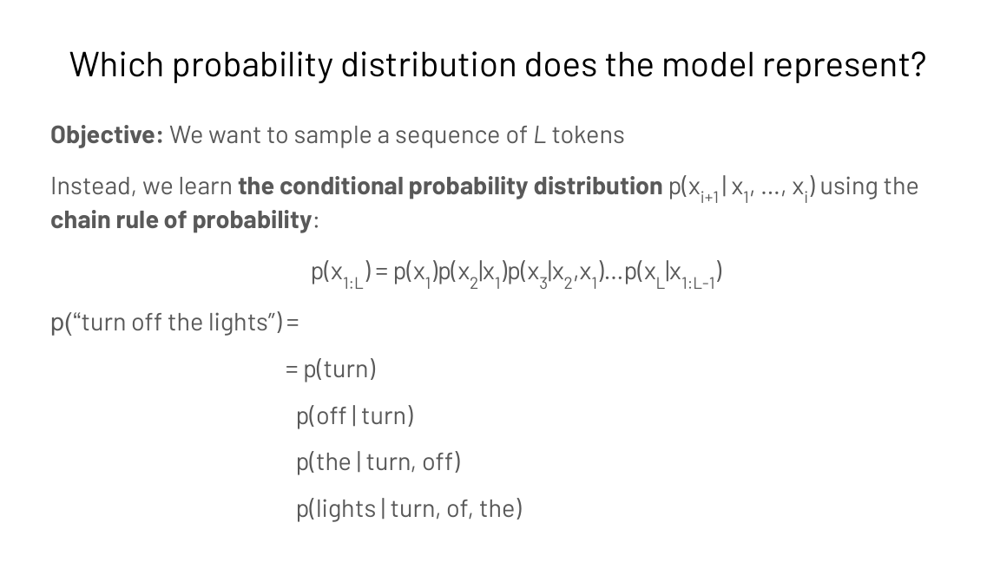
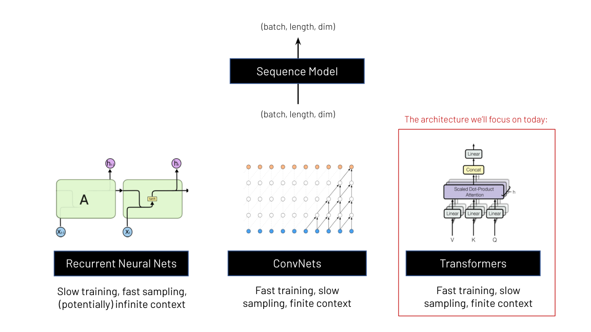
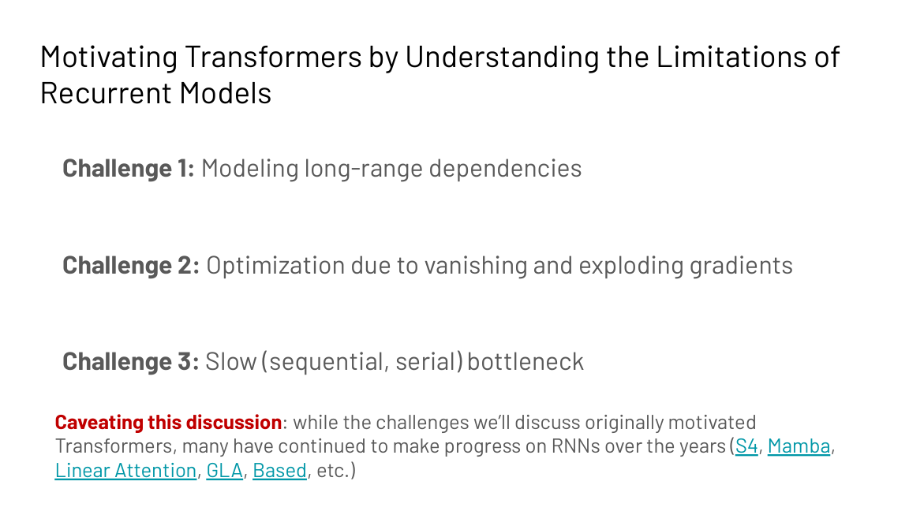
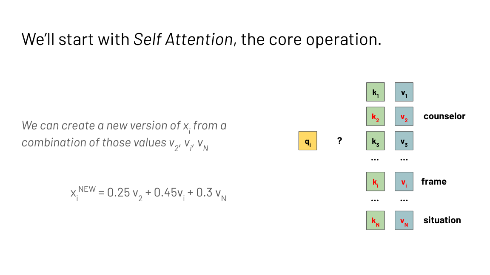
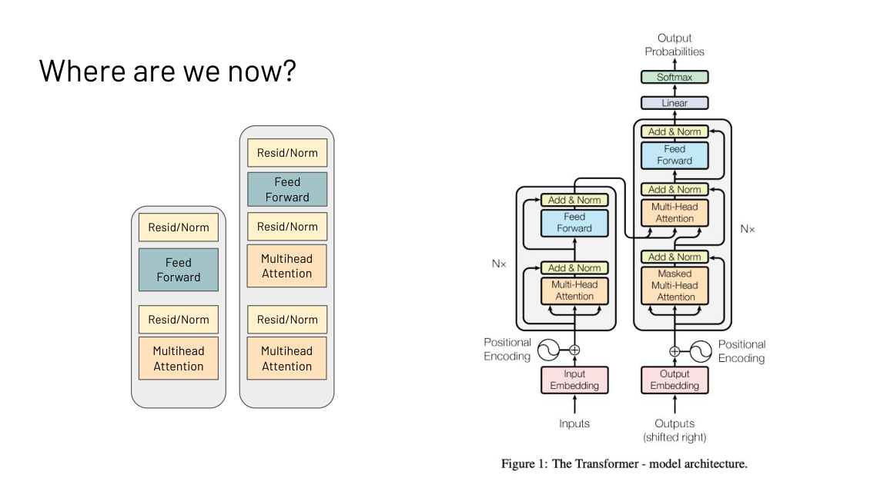

Lecture 2: Sequence Models and the Transformer
How to read this lesson
This is a bridge lesson. The transformer is derived from scratch in CS336 L03 and in CS224N. This lecture gives the CS229S framing: why sequence models matter for systems, what the transformer replaced, and the block diagram every later lecture in this course optimizes. Read Level 1, then follow the links for depth.
Level 1: Sequence models map sequences to sequences
A sequence model takes an input sequence and produces an output sequence. Text to text is the flagship: “The Cat in the” goes in, “Hat is a book by Dr. Seuss” comes out. But the same frame covers audio, sensor data, medical signals, and images. The systems in this course treat all of them as (batch, length, dim) tensors.
A language model is a compact probability distribution over token sequences. For vocabulary V = {lights, off, the, turn}, the model might learn P(“turn off the lights”) = 0.03 and P(“off turn the lights”) = 0.0002.

Modeling the joint distribution directly fails: sequences have varying lengths, the space of possible sequences explodes, and average-case probabilities are imprecise. Instead the model learns the conditional distribution with the chain rule:
p(x1..xL) = p(x1) p(x2|x1) p(x3|x1,x2) … p(xL|x1..xL-1)
Each factor is one next-token prediction. Training on large corpora such as the Pile (800 GB of diverse text) teaches the model these conditionals. Perplexity is the intrinsic evaluation: how uncertain is the model about the true next word.
Three failures of the joint approach. Sequences have varying lengths, so one fixed model cannot cover them. The number of possible sequences explodes with length, so the space cannot be represented. And joint probabilities average over sequences instead of picking the best continuation. The chain rule turns one impossible problem into many small next-token predictions, which is exactly what the hardware in later lectures is tuned to compute. In autoregressive decoding. Each factor p(xi | x1..xi-1) is one model call that reads the whole prefix. Lecture 4 shows why that call is memory bound and how KV caching removes the repeated work.
Level 1: Three architecture families

All three families share the interface: (batch, length, dim) in, (batch, length, dim) out. They differ in the training versus inference tradeoff.
| Family | Training | Inference | Context |
|---|---|---|---|
| Recurrent nets | Slow (serial) | Fast | Finite, compressed into state |
| ConvNets | Fast | Slow sampling | Finite |
| Transformers | Fast (parallel) | Slow sampling | Finite, full look-back |
Transformers won because training dominates cost: fast parallel training on huge data beats elegant serial inference. The systems course then spends its energy fixing the slow-inference column. L09 revisits this table when asking whether attention-free architectures can change it.
Level 1: What the transformer replaced
Recurrent neural networks were the state of the art around 2016. The idea: compress the history of all seen tokens into a hidden state, update it each timestep, generate outputs from it. Three challenges motivated the transformer.

Challenge 1: long interaction distances. In “The counselor helped frame the situation”, the word “The” passes through many timesteps before reaching “situation”. Distant tokens interact only through a long chain of state updates.
Challenge 2: vanishing and exploding gradients. Backpropagation multiplies through every timestep. Large values explode the gradient and destabilize training; small values shrink it toward zero and the network stops learning.
Challenge 3: serial bottleneck. Timestep t must finish before timestep t+1 starts. No parallelization across the sequence.
The lecture notes that RNN research continued (S4, Mamba, linear attention), which is the subject of L09.
Level 1: Attention as a hash-table lookup
The key idea of attention: all tokens interact with all other tokens’ representations. The lecture’s intuition is a hash table. Every token xi becomes a key ki and a value vi. Each token also becomes a query qi that looks up the table: compare the query to all keys, take the most similar values, mix them.

Concretely, for the word “frame” in “The counselor helped frame the situation”, the query for “frame” might return 0.25 of “counselor”, 0.45 of “helped”, 0.30 of “situation”. The new representation is the weighted mix. Attention supplies the weights. This is the contextual representation: “frame” now carries its context.
The full computation, in four steps:

- Transform each token three ways: qi = xi Wq, ki = xi Wk, vi = xi Wv.
- Score every pair: O = Q K^T, an N by N matrix.
- Normalize rows: S = Softmax(O / sqrt(d)).
- Mix values: output = S V.
Two properties made this a systems success. Maximum interaction distance is O(1) instead of O(n): any two tokens meet directly. And the pairwise interactions compute in parallel, which is why transformers train fast on GPUs. The price is the N by N matrix: quadratic memory and compute, the target of Lectures 3 and 6.
Multi-head attention splits the d dimensions across h heads, so each head attends over d/h dimensions. Different heads learn different interaction patterns. The feed-forward network then applies nonlinearity, since attention alone only takes weighted averages. Residual connections, layer normalization, and scaled dot products keep training stable. Position encodings (absolute, Alibi, rotary) tell attention which token sits where.

Level 1: Three ways to use a transformer
Decoder-only. Uses the final representation to generate text. Training objective: next-token prediction. Reads left to right. Example: GPT. This is the architecture the whole course optimizes.
Encoder-only. Uses the final representation for classification or embeddings. Training objective: span prediction (mask words, predict them). Reads bidirectionally. Example: BERT.
Encoder-decoder. Two stacks: one reads the input, one generates the output. Useful when inputs and generations differ in kind, e.g. questions versus answers.
Pretrained models learn from next-token or span prediction on the open web. Fine-tuning then adapts them to instructions and human preferences, which is L08.
Because generation is the expensive workload. Decoder-only models generate token by token, and each step is a full model pass over a growing prefix. That is the memory-bound, latency-sensitive pattern that KV caching, batching, and speculative decoding in Lecture 4 exist to fix. Encoders do one forward pass; there is far less to optimize. Every token attends to every other token, which costs O(N squared) in the sequence length. That single cost drives the memory hierarchy work in Lecture 3, the FlashAttention derivation in Lecture 6, and the attention-free architectures in Lecture 9.
Recap: the whole lesson on one screen
One impossible joint distribution becomes many small next-token predictions. Each prediction is one model call over the prefix.
Key: p(x1..xL) as a product of conditionals
RNNs, ConvNets, and transformers all map (batch, length, dim) to (batch, length, dim). They differ in training versus inference speed.
Key: transformers won on parallel training
Long interaction distances, vanishing and exploding gradients, and a timestep bottleneck. Attention answers all three.
Key: O(n) interaction distance in RNNs
Queries look up keys, values mix by similarity. The result is a contextual representation of each token.
Key: xi_new = weighted mix of values
Project to Q, K, V. Score QK^T. Softmax. Mix V. The N by N matrix costs O(N squared): the target of Lectures 3 and 6.
Key: S = Softmax(QK^T / sqrt(d))
Multi-head attention mixes tokens. The MLP adds nonlinearity. Residuals, norms, and scaling keep training stable.
Key: this block is what we optimize
Generate text, classify text, or translate between kinds of text. This course optimizes decoder-only generation.
Key: GPT vs BERT vs seq2seq
Next-token prediction on the web teaches the base model. Fine-tuning teaches instructions and human preferences.
Key: L08 covers fine-tuning systems
Official sources and further reading
Official: - Intro to Sequence Modeling slide deck (Fall 2023 headers).
Further reading: - Vaswani et al., “Attention Is All You Need” (2017): the original transformer paper. - CS336 L03: the transformer derived from scratch with executable code. - CS224N: the full NLP treatment of attention and transformers. - Brown et al., “Language Models are Few-Shot Learners” (2020): what scale unlocked.
Caveats from these sources. The slide deck is the Fall 2023 version; the lecture order follows the Fall 2024 calendar. Some slides (e.g. “Created by genmo.ai”) are generated illustrations, not data. Position encoding research (absolute, Alibi, rotary) is mentioned as active; the lecture does not endorse one.
Connections to the other courses
- CS336 L03: the transformer from scratch. Read it for the full derivation.
- CS224N: attention, transformers, and their NLP history in depth.
- CS229S L04: autoregressive decoding as a systems workload.
- CS229S L06: why the N by N attention matrix must go.
- CS229S L09: the RNN strikes back: S4, Mamba, and linear attention.
- CS336 L15: post-training: what fine-tuning does to the model.
Sequence models cheatsheet. Sequence model: input sequence to output sequence. LM: compact distribution over token sequences; chain rule p(x1..xL) = product of conditionals. Perplexity: uncertainty about the true next word. Families: RNN (slow train, fast infer), ConvNet, transformer (fast train, slow sampling). RNN failures: long distances, vanishing/exploding gradients, serial bottleneck. Attention: qi looks up kj, mixes vj; O = QK^T (N by N); S = Softmax(O/sqrt(d)); out = S V. O(1) interaction distance, parallelizable, O(N^2) cost. Multi-head: h heads over d/h dims. Block: attention + MLP + residual + norm. Uses: decoder-only (generate), encoder-only (classify), encoder-decoder (translate). Pretrain on web, fine-tune for instructions.
Attention in one line. Every token asks every other token how much it matters, then becomes the weighted average of the answers.
Sources
- SLIDESIntro to Sequence Modeling slide deck (Fall 2023 headers)
- PAPERVaswani et al., Attention Is All You Need (2017)
- PAPERBrown et al., Language Models are Few-Shot Learners (GPT-3, 2020)